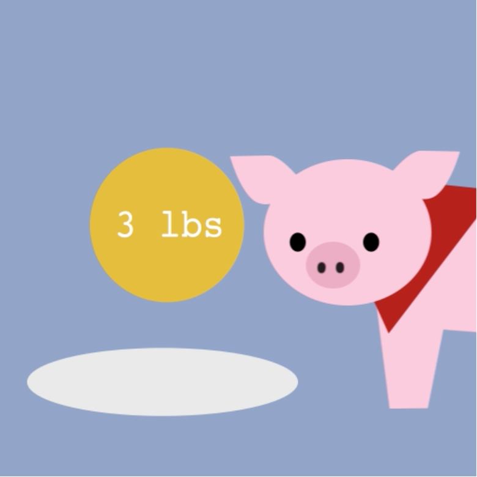

factory farming
I created this video for a motion graphics class, on the topic of the environmental impact of factory farming. Inspired by some previous research I'd done, I thought this topic could be interesting to explore, both informationally and graphically.
I kept to two fonts: monospaced Courier and sans serif Spartan (Bold). I made some assets, like the farm animals, in Photoshop. This project was a culmination of what I'd learned through this class in After Effects and motion graphics.
Adobe After Effects, Photoshop; March 2021